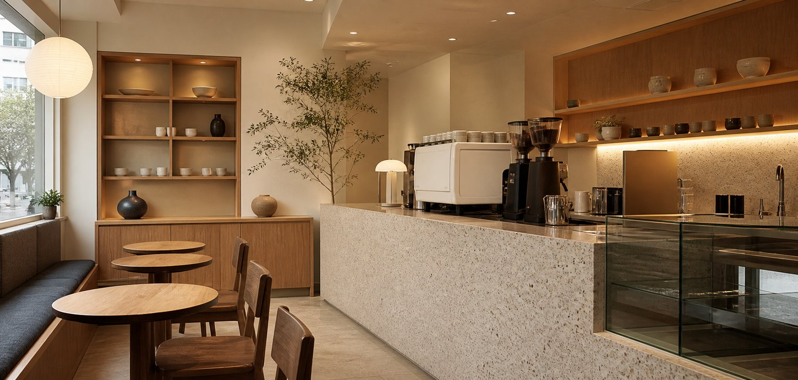
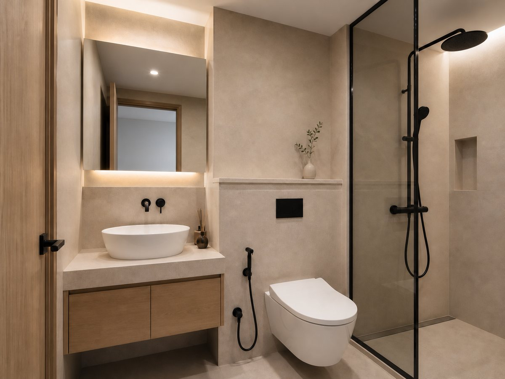
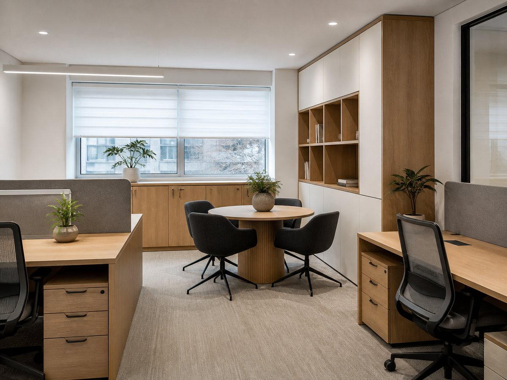

PORTFOLIO



OUR WAY
예쁜 집 사진은 이틀이면 질립니다.
저희는 아침 햇빛이 드는 자리, 자주 여는 서랍의 높이 같은
사진에 안 나오는 것들을 설계합니다.
— 무늬와결 실장 나무늬
FLOW
사는 방식을 2시간 여쭙니다
두 가지 방향으로 제안
담당 실장이 끝까지
계절 지나며 점검
BEFORE / AFTER
20년 된 주방을 그대로 두고 상판과 수납만 바꿨습니다. 철거를 줄이면 비용도 줄어듭니다.


MORE WORKS
주거 외에 소형 상업 공간과 사무 공간도 같은 방식으로 진행합니다.

